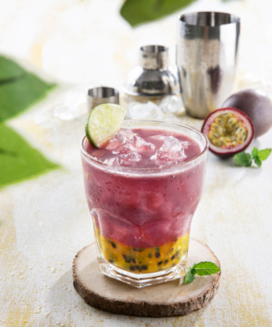

5 Receitas que podem ser feitas com o Açai
- Sacole de açai
- Milk shake de açai com banana
- Pudim gelado de açai
- Torta de açai
- Caipirinha de açai e maracujá 
Um dos que mais fazem sucesso no verão. Sacolé de açai com leite condensado. E é muito facil de fazer: Basta fazer um suco com o açai, misturar leite condensado e colocar nos saquinhos, depois so esperar congelar e se deliciar com o seu sacole!
Pra quem é fã de uma tigela de açai com granola, vai adorar esta receita de milk shake com esses ingredientes mais açai e leite. Sendo otimo para dias quentes, já que deve ser servido gelado, e tambem para os dias em que você quer mudar a sobremesa.
Uma receita deliciosa de pudim feita com açai descongelado, leite, creme de leite e gelatina. Tal receita de pudim n precisa de ovos e para quem ama açai, pode-se trocar leite por mais açai
Uma torta com gosto de açai na tigela. A torta e dividida em um bolo e uma mousse de açai que deve ser colocada acima, com a ajuda de um aro ou uma forma de fundo removivel. Ao fim, você pode decorar o bolo ao seu gosto.
Pra quem adora uns drinques vai curtir esse daqui. Basta acrescentar o açai, o maracuja e o xarope num copo, amassar todos e, por fim, acrescentar a cachaça com gelo.
Tabela nutricional do açai
A tabela a seguir inclui a composição nutricional em 100g de açai natural sem a adição de outros ingredientes.
Quantidade: 100 g de açai
Energia:: 58 calorias
| Tabela nutricional | Nutrientes |
|---|---|
| Proteínas | 0,8 g |
| Gorduras | 3,9 g |
| Carboidratos | 6,2 g |
| Fibras | 2,6 g |
| Vitamina E | 14,8 mg |
| Ferro | 11,8 mg |
| Vitamina C | 9 mg |
| Calcio | 35 mg |